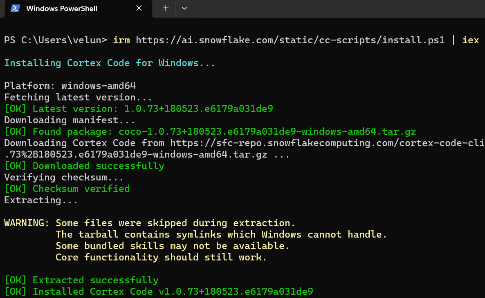
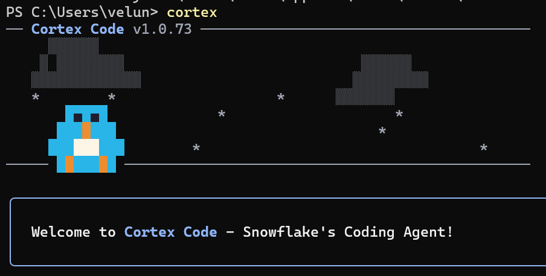
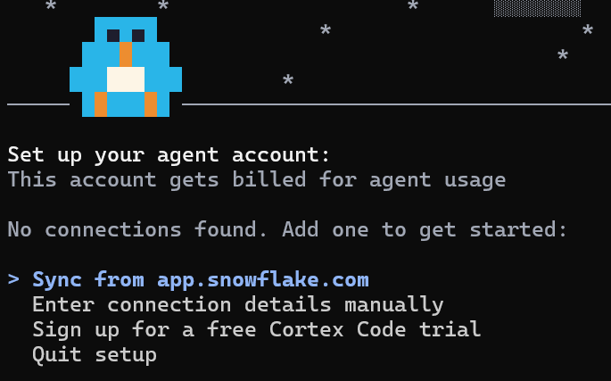
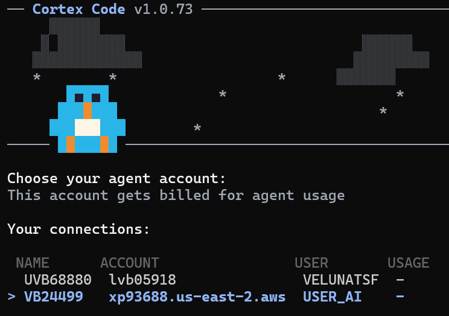

CoCo CLI Setup
Install the Snowflake CoCo CLI (official name for the product formerly called Cortex Code) and connect to your Snowflake account
Where you are
This is the last setup step before the labs begin. CoCo is both a tool and a workload: it is what you will use to build the FinOps dashboard in Module 09, and every prompt you send through it draws AI Credits that show up in the telemetry you query in Module 06. Treat the prompts below as the first entries in your own spend history.
Learning Objectives
- Install the Snowflake CoCo CLI on macOS, Linux, or Windows
- Connect to the account you built in Module 03 using Browser-Based SSO
- Confirm the CLI is using the expected role, warehouse, and database
- Run your first prompt and recognize that it consumed billable tokens
Requirements
- Snowflake account with the
cortex_analystrole configured (Module 03: Lab Environment Setup) - Terminal with bash, zsh, or fish (macOS/Linux) or PowerShell (Windows)
- The
USE AI FUNCTIONSprivilege and theSNOWFLAKE.CORTEX_USER(orAI_FUNCTIONS_USER) database role, both granted in Module 03 - MFA enrolled for
USER_COCO, since the browser login will require it
CLI Installation
macOS and Linux (including WSL)
Open a terminal and run the installer:
curl -LsS https://ai.snowflake.com/static/cc-scripts/install.sh | sh
The script installs the cortex executable to ~/.local/bin and adds it to your PATH.
Windows (Native - Preview)
Open PowerShell and run:
irm https://ai.snowflake.com/static/cc-scripts/install.ps1 | iex
The executable installs to %LOCALAPPDATA%\cortex and is added to your PATH automatically.
Installation Output:

The installer downloads the latest version, verifies the checksum, and installs Snowflake CoCo. The warning about symlinks on Windows is expected and does not affect core functionality.
Verify Installation
Confirm Snowflake CoCo CLI is installed correctly:
cortex --version
You should see the installed version number printed to the terminal.
Connect to Cortex
Launch Snowflake CoCo CLI
Start the CLI by typing cortex in your terminal:
cortex
You'll see the CoCo welcome screen:

Set Up Agent Account
On first launch, the CLI will prompt you to set up your agent account. Select "Sync from app.snowflake.com" to import your existing Snowflake connection:

Available options:
- Sync from app.snowflake.com - Import connections from your Snowflake account (recommended)
- Enter connection details manually - Type account identifier, username, and auth method
- Sign up for a free CoCo trial - Create a new trial account
Choose Your Connection
If you have multiple Snowflake accounts, select the one you configured in Module 03:

The connection list shows your account name, account identifier, and associated user. Select the account where you created the cortex_analyst role.
Browser-Based SSO Authentication
When you select externalbrowser as the authenticator (the default), the following flow occurs:
What happens during Browser-based SSO:
- CLI opens your default browser to the Snowflake login page
- You authenticate with your Snowflake credentials (MFA required)
- Browser redirects back to a local callback URL
- CLI receives the authentication token and stores it for the session
connections.toml Configuration
After first connection, your config is saved in ~/.snowflake/connections.toml:
[connections.my_account] account = "ORGNAME-ACCTNAME" user = "YOUR_USER" authenticator = "externalbrowser" role = "cortex_analyst" warehouse = "cortex_wh" database = "cortex_lab" schema = "ai_workshop"
Troubleshooting SSO
- If the browser does not open automatically, copy the URL from the terminal and paste it manually
- Ensure pop-ups are not blocked for the Snowflake domain
- If using a remote/headless environment, switch to Programmatic Access Token (PAT) instead
- Token expires after the session ends. Re-running
cortexwill re-authenticate via browser
Verify Connection
Once connected, check the session before you spend anything on it:
/status
This prints your active connection, role, warehouse, database, and schema.
Confirm four values before continuing: role cortex_analyst, warehouse cortex_wh, database cortex_lab, and schema ai_workshop. If the role or warehouse is wrong, the labs will either fail on privileges or run compute outside the Resource Monitor you created in Module 03. Correct it in ~/.snowflake/connections.toml and relaunch rather than switching context by hand each session.
Run Your First Prompt
Ask a Plain-English Question
Type a natural language query:
What databases do I have access to?
CoCo translates your request into SQL, runs it against Snowflake, and returns the results directly in the terminal.
Try More Examples
Keep these scoped to the lab schema you built in Module 03. Both prompts should return quickly, and both give CoCo a reason to read your metadata:
List the tables in CORTEX_LAB.AI_WORKSHOP with their row counts
Describe the columns in CORTEX_LAB.AI_WORKSHOP.CUSTOMER_FEEDBACK and show me five rows
Build the Cost-Check Habit
Every prompt above cost tokens, including the ones that returned nothing interesting. The habit worth forming now is asking "how much did that cost?" immediately after each answer, not at the end of the month. You will put a number on it in Module 06: Usage Tracking & AI Telemetry, where the ACCOUNT_USAGE and usage-history queries for AI spend live.
Useful CLI Commands
| Command | Description |
|---|---|
/status |
Show current connection, role, warehouse, database, schema |
/help |
List all available slash commands |
/sql SELECT ... |
Run SQL directly |
/new |
Start a fresh session |
/resume |
List and resume previous sessions |
/rename <name> |
Rename the current session |
/rewind |
Roll back to an earlier point in the conversation |
/fork |
Create a new session branched from current point |
Ctrl+T |
Open the built-in table viewer for query results |
#TABLE_NAME |
Reference a table - pulls schema and sample rows into context |
Table Reference Shortcut
Prefix a fully qualified table name with # to automatically pull its schema and sample rows into the conversation:
Tell me about #CORTEX_LAB.AI_WORKSHOP.CUSTOMER_FEEDBACK
This shortcut is not free: the schema and the sample rows are sent to the model as input tokens, so a wide table costs more to reference than a narrow one. That trade-off is the subject of Module 07: KV Cache Optimization.